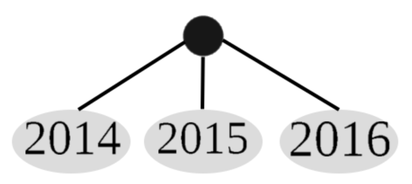
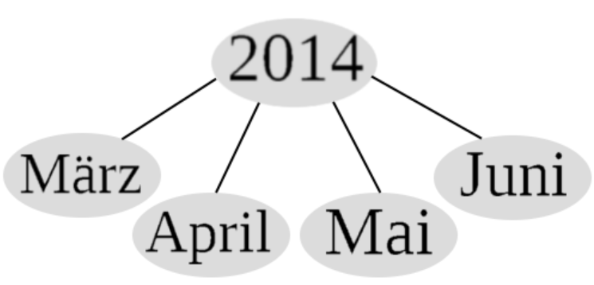
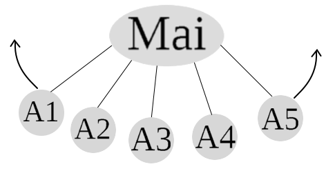
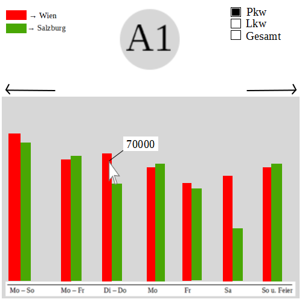

Prototyp 3
Idee
Die Daten sind schon von der Aufteilung her sehr umfangreich. Man kommt über das Jahr zum Monat zum Zeitfenster usw.
Bei diesem Prototypen geht es darum eine bessere Auswahlmöglichkeit der gewünschten Daten zu bieten und dabei auf
die alten Dropdown Menüs zu verzichten. Durch Anklicken des gewünschten, soll es dem Benutzer ermöglicht werden die Daten
in eigener Geschwindigkeit und Genauigkeit zu erforschen. Zusätzlich sollte der Benutzer keine Anleitung brauchen um
dieses Tool zu verwenden. Größe der Fenster und Farben der Statistiken sollen nach Möglichkeit frei einstellbar sein.
Ablauf

Am Beginn wird der Benutzer mit der "Wurzel" des Baumes begrüßt. Durch einfachen Linksklick wird ein Jahr markiert.
Mit Doppelklick werden alle ausgewählten Jahreszahlen ausgefächert. Wobei der Startpunkt aus dem Bild rutscht und die
Jahreszahlen zum neuen Mittelpunkt werden. Mit erneutem Doppelklick auf das Jahr kommt man wieder zurück um die Auswahl
zu verändern.

Im Beispiel wurde nur ein Jahr gewählt. Wenn zwei oder mehr Jahre gewählt werden dürfen trozdem die Monate nur einzeln
auftreten. Auch hier können wieder mehrere Monate gewählt werden. Dadurch das die Monate im Kreis aufgefädelt werden
gibt es auch kein Problem alle Monate anzuzeigen. Ausserdem ist es eine fixe Anzahl die sich nicht verändert.

Die Anzahl der Autobahnen ist natürlich nicht fix und es sollte in Zukunft möglich sein auch noch die Schnellstraßen
hinzuzufügen. Deshalb ist es nun möglich die Straßen mit der Maus aus dem Bild und in das Bild zu ziehen. Durch die
Pfeile angezeigt. Dadurch wird verhindert das ein Bereich zu voll wird und die Übersicht verloren geht. Weiters muss
es möglich sein, Straßen die aus dem Bild gezogen werden, immer noch markiert zu halten.

Nun kommt man zu den eigentlichen Daten. Wird mehr als eine Straße ausgewählt wird Standardmäßig nur eine
Richtung angezeigt. Durch die Auswahl von mehreren Straßen wird das Balkendiagramm breiter, sobalt eine
maximal Breite überschritten wird kann durch ziehen wieder der gewünschte Ausschnitt ins Bild gerückt werden.
Weiters besteht die Möglichkeit zwischen Pkw,Lkw oder Gesamt zu wählen. Mit einem Klick auf die Farbe kann man
diese verändern.
Vorteile
- Leichte Auswahl
- Übersicht bleibt erhalten
- Leicht zu Erweitern
- Beliebige Kombinationen möglich
Nachteile
- Der Startpunkt ist fix vorgegeben. Zuerst Jahr dann Monat usw. Auch wenn eine Andere Reihenfolge ausgesucht wird
ist diese wieder vorgegeben. Der Benutzer kann nicht entscheiden an welchem Punkt gestartet werden soll.
- Es sind einige Schritte notwendig um zum gewünschten Ergebniss zu kommen. Können auch nicht abgekürzt werden.
- Man braucht für die Daten eine kleine Datenbank damit der Wechsel zwischen den Schichten flüssig voran läuft.